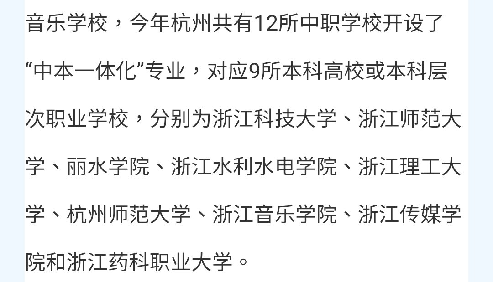

RedFox（2代目）🇲🇴🇭🇰
@FoxRed695449
@Reefcoral123456 @mikawaifusuki @hsn8086 怎么不怼了？找不出问题了？
同时作为一个虽然在浙江中考考上普高的考生（虽然最后没读）表示
浙江还有中本一体化，分数线比普高分数线还高，直接是读职高再免高考升本科，一样是四年全日制本科，而且学校还不错
真不懂歧视职高的想法哪里来的，什么老古董啊
香港vtc还能升到hku

ade ad
@Reefcoral123456
@FoxRed695449 @mikawaifusuki @hsn8086 哦